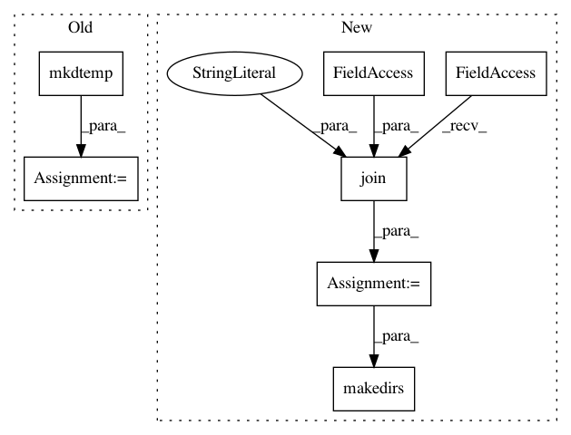

ed4a0308d7c40c89dc950a3b4350258bdae4c76a,mltsp/tests/test_run_in_docker_container.py,,test_copy_results_files_featurize,#,75
Before Change
def test_copy_results_files_featurize():
Test copy results files - featurize
copied_data_dir = tempfile.mkdtemp()
featurize_setup()
shutil.copy(
pjoin(DATA_PATH, "testfeature1.py"),
cfg.CUSTOM_FEATURE_SCRIPT_FOLDER)
After Change
def test_copy_results_files_featurize():
Test copy results files - featurize
copied_data_dir = os.path.join(cfg.PROJECT_PATH, "tmp",
str(uuid.uuid4())[:10])
os.makedirs(copied_data_dir)
featurize_setup()
shutil.copy(
pjoin(DATA_PATH, "testfeature1.py"),
cfg.CUSTOM_FEATURE_SCRIPT_FOLDER)
In pattern: SUPERPATTERN
Frequency: 3
Non-data size: 7
Instances
Project Name: cesium-ml/cesium
Commit Name: ed4a0308d7c40c89dc950a3b4350258bdae4c76a
Time: 2015-05-13
Author: a.crellinquick@gmail.com
File Name: mltsp/tests/test_run_in_docker_container.py
Class Name:
Method Name: test_copy_results_files_featurize
Project Name: cesium-ml/cesium
Commit Name: 9ca3f533cb6d467a1ebffda880137d3cc0ef9561
Time: 2015-05-13
Author: a.crellinquick@gmail.com
File Name: mltsp/tests/test_custom_feats.py
Class Name:
Method Name: test_extract_feats_in_docker_container
Project Name: deepdrive/deepdrive
Commit Name: c38c9f71099f308c15d45750e653863af01f182d
Time: 2019-04-04
Author: cquiter@gmail.com
File Name: utils.py
Class Name:
Method Name: save_hdf5_recordings_to_png